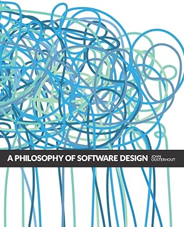

Philosophy of Software Design
This insightful book tackles the real root of software complexity: poor design decisions. Author John Ousterhout presents practical principles on how to decompose problems, write clean abstractions, and think about code as a long-term investment. A must-read for developers ready to level up their code elegance.
Author: John Ousterhout
Published: 2018
Genre: Software Engineering, Programming Philosophy